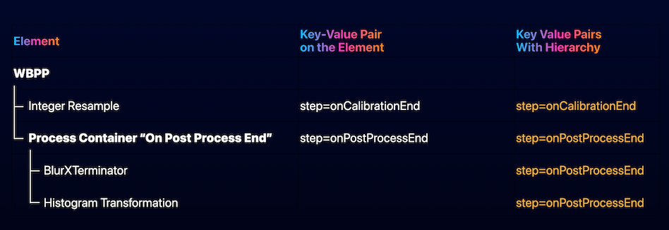
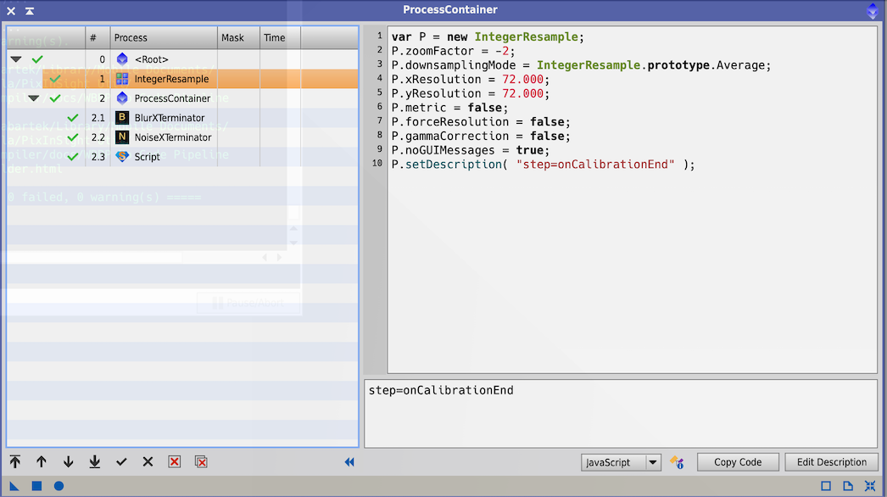

An extension for WBPP that schedules standard PixInsight processes from a ProcessContainer without editing the WBPP source. [more]
Keywords: WBPP, ProcessContainer, Automation, Script Execution, PixInsight, Pipeline Builder
[hide]
[hide]
The WBPP No Code Pipeline Builder extends PixInsight's WeightedBatchPreProcessing script with a ProcessContainer-driven automation layer.
Users create a normal PixInsight ProcessContainer, save it as a process icon named WBPP, and annotate its elements with simple key=value metadata. The script reads that container, resolves inherited metadata, filters matching WBPP groups, and inserts the selected processes at specific points of the WBPP pipeline.
The current implementation still uses the ProcessContainer-based workflow. This is different from newer purpose-built builders such as MultiScopeStacker, which use direct pipeline logic instead of custom ProcessContainer execution.
[hide]
The script does four main things:
This allows advanced WBPP customization without modifying the WBPP core script for each workflow.
[hide]
Only one active process icon should use the identifier WBPP. If you need to keep an older version, rename it first.
Metadata declared on a parent ProcessContainer is inherited by all of its children unless a child overrides the same key.

Keyword hierarchy and inheritance rules
[hide]
Metadata are parsed from the Description field.
Example:
[hide]
For each invocation point, the script first extracts all processes from the WBPP ProcessContainer that declare the current step.
It then compares the remaining metadata keys against each WBPP frame group:
If one or more processes match a group at a given step, they are scheduled in order.
[hide]
These are the step tags that are currently scheduled by the script's active build logic:
The script also defines additional internal step names such as onCalibrationStart, onLPSStart, onLSPEnd, onCCStart, onCCEnd, onDebayerStart, onDebayerEnd, onLNStart, onLNEnd, and onIntegrationEnd. These names exist in the code, but they are not currently scheduled by the active build path.
[hide]
The onPostProcessEnd step is special. It does not work on the original subframes. Instead, it collects generated master outputs and turns them into temporary FileItem entries for custom processing.
The current implementation looks for these master families:
and for these variants:
If a custom process writes a new version of one of those masters, the script remembers that output and feeds it into subsequent onPostProcessEnd custom operations instead of reopening the original master again. This allows multiple end-of-pipeline custom steps to chain correctly.
[hide]
The builder also patches WBPP target-frame generation so existing drizzle and local-normalization sidecar paths are preserved when those files already exist on the FileItem objects.
This matters in practice because later WBPP operations such as drizzle integration and local normalization can continue to reference the correct generated sidecars instead of blindly rebuilding default filenames.
[hide]

Example WBPP ProcessContainer with inherited metadata and multiple custom steps
One typical arrangement is:
This causes calibrated light frames to be resampled after calibration, and later applies the end-of-pipeline processes to the generated masters.
[hide]
Copyright © (c) 2025 Luca Bartek, Roberto Sartori